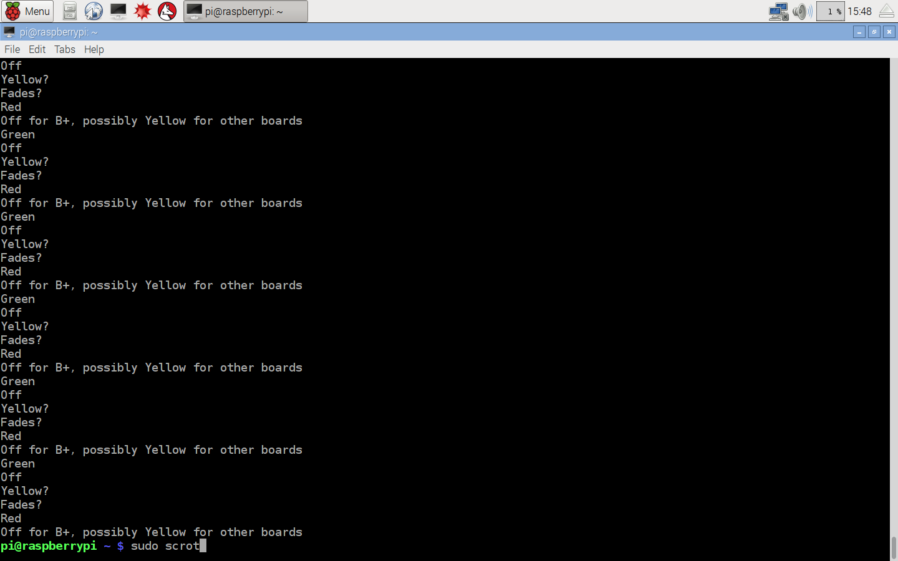

Week 6
- As of today (10/11/2016) We are following the Project Schedule and achieved some of the tasks before the due date.
Components purchasing and their assembly were all done ahead of time given on the schedule. - Current objectives are (according to the approved proposal) PCB fabrication and Group Placard. PCB is soldered already and checked on any malfunctioning in the Prototype Lab. Group Placard in process and will be finished on time.
- Problems/Solutions and Opportunities/Modofications
- Problem: During PCB assembly, I have accidentally soldered all 3 transistors together which would cause the board
to short circuit and cause malfunction in the future. One of the routes was not working properly
- Solution: Used desolrdering pump to remove solder from transistors and connected bridges with the wire
- Financial Updates: All of the components were met with planned financial needs. No extra coponents were purchased
-
Documents (reference pages):
- Controlling toy quadcopter(s) with Arduino
- Arduino with Pi connection
Week 5
- Unboxing video
- Acquisitions.
- Order Confirmation (USB to Ethernet adapter)

- Check update guidelines.
- Win32diskimager is downloaded and installed
- Next week is the mechanical assembly milestone.
Week 4
- Budget Due -> trade it for your previously submitted work (rubric).
- Remember to wear your glasses for safety.
- Proof of purchase due next week by bringing your parts to class and posting on your build log (be sure to not post any sensitive information).
- Keep in mind that a few seconds of your un-boxing should be videoed to be added to a few seconds of assembly and a few seconds of power-up for your eventual build video.
Week 3
- Project Schedule
- Budget Due next week.
Week 2
- PCB printing using Eagle
- Project Proposal
- Microsoft Product discussion, MS Project critical path and dependencies are due Week 3 (rubric).
Week 1
Building IoT Projects
Future Hardware Weeks
- Week 4 Budget Due
- Week 5 Progress Report Due (including proof of order)
- Week 6 Progress Report Due
- Week 7 PCB Due
- Week 8 Placard Due
- Week 9 Progress Report Due
- Week 10 Progress Report Due
- Week 11 Progress Report Due
- Week 12 Progress Report Due
- Week 13 Presentation Due
- Week 14 Build Instructions Due
- Week 15 30 Second Script Due
- http://www.openscad.org/downloads.html
- http://www.w3schools.com/html/html_lists.asp
Integration Weeks
- Introduction
- Software Requirements Specification
- Declaration of Authourship
- References: APA format
- Open House
- Presentations